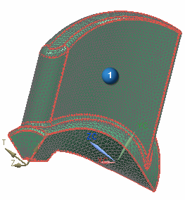
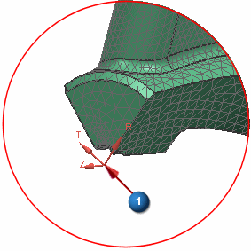

Define a cylindrical CSYS as the nodal displacement CSYS
 Edit→ Node→ Assign Nodal Coordinate System
Edit→ Node→ Assign Nodal Coordinate System
-
Type Filter
Polygon Body

Tip
The Type Filter
 is located on the Selection bar in the toolbar area.
is located on the Selection bar in the toolbar area.
-



-
CSYS
Cylindrical
-
 CSYS of Object (Specify Coordinate System)
CSYS of Object (Specify Coordinate System)
-

-
 Interior and Boundary Nodes (Boundary Options)
Interior and Boundary Nodes (Boundary Options)
-
OK